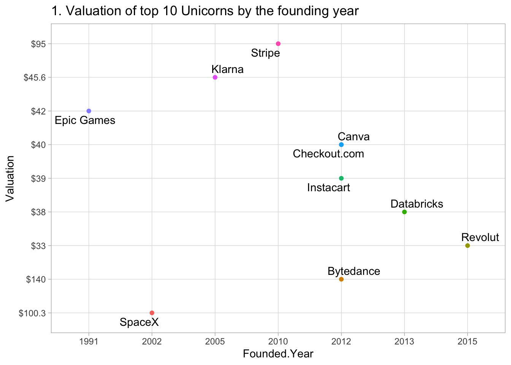

Chapter 4 Results
Loading the file
Plots

Graph 1: Valuation of top 10 unicorns by founding year
Inference from the above scatterplot
- Companies like SpaceX, Stripe, and ByteDance have become successful with a valuation of above $90B.
- We infer that companies with seeding and initial funding have the edge over startups without funding, hence the valuation difference.
- In 2012, there was a peak in the number of unicorn startups(4).
Top 10 most successful unicorn investors
Inference from the above bubble plot:
- We see that Sequoia Capital China has invested in a significant number of startups which are valued above $7B, whereas other Unicorn investors have invested in growing startups, with valuation below $6B.
- Accel has invested in most number of startups, whereas investors like Insight Partners and Tiger Global Management have invested in lesser number of startups.
Industry having most valuated unicorns
Inference from the above plot:
- Internet software & services and Fintech are the major industries having significant and higher valuation whereas data management and analytics is the industry having least valuation.
- This suggests that the number of investors for startups are higher in Internet software & services and Fintech industries.
- Artificial Intelligence domain has the most valuation over $4B despite the fact that it has comparatively less number of investors.
Total raised with respect to total valuation in financial stage
Inference from the above scatterplot:
- As we can see in the figure, startups like UBTech Robotics, Blockchain and Meizu technology have significant amount raised.
- This indicates that corporate and IPO acquired sectors have more funding and are seen as emerging sources of economic growth.
- Fields like blockchain and stocks having higher scope of growth and have significant number of investors.
Founding year with unicorn valuation and count
Inference from the above bubble-plot:
- The number of venture capital funds keeps rising for a given unicorn from the founded year.
- This surge can be explained by the fact that there is abundance of liquidity for startups, as they prefer to move from private to public markets.
- Various startups founded in 2020 in growing domains such as blockchain and stock markets, are valued below $10B.

Unicorn location with number of investors and valuation
Inference from the above bubble-plot:
- We see from the above plot that UK has highest average valuation for a given number of unicorns. This can be attributed to various reasons such as ease of doing business, manageable taxation system, Innovator visas and access to funding.
- China and United States have significant number of unicorns with valuations above $3B, indicating expansion of consumer markets and affordable labor costs.
- Some countries like India, Canada and Germany have just entered the market and have started to establish stable unicorn startups.
 Top 10 Categories with maximum failed startups
Top 10 Categories with maximum failed startups
Inference from the above barplot:
- Technology sector has the the most innovations in building a startup culture, which leads to major successes and failures as indicated in the plot.
- Market necessity, impactful business model and passionate teams play a major role in building startup ventures.
- Medical and education sectors have least failed startups indicating that the innovation and improvement in strategies are helping in building advanced technologies to cure diseases and strategically extending education opportunities to inaccessible and remote areas.
Percentage of Dead Startups by Headquarters City
Inference from the above pie-chart:
- A high percentage of startups are from Rio De Janeiro, San Francisco, San Jose, Sunnyvale and Wilmington.
- Arlington Heights and Atlanta have the least share of dead startups indicating establishment of new startups or no startups. However, any major conclusions cannot be drawn from this interpretation as we miss the bigger picture, as to the count of startups in these cities.
- However the city distribution of the data cannot be an analyzed more than 40% of the data is classified as others.
Amount raised in different funding rounds
Inference from the above barplot:
- Funding round amounts and stages vary widely depending on the company’s size, previous funding rounds and the company’s value.
- Currently operating startups have pre-seed, seed, angel and series funding which helps in evaluation of strategies and improvising feedbacks.
- Exited and dead startups have lesser average funding amount, due to stagnated idea progression and incompetitive market evaluation.
 Categories with status of startups
Categories with status of startups
Inference from the stacked barplot:
- We see from the plot that the medical field has startups which are operating and are open to innovation and growth, and henceforth there are no dead or exited startups.
- In 90% of the domains, the number of operating startups are higher compared to the dead or exited startups.